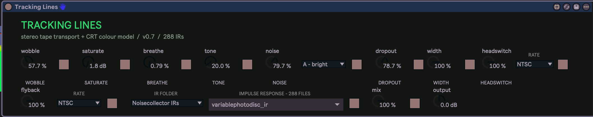

30
tracking lines
Worn tape transport, VHS head switching and CRT whine, finished through a library of 288 lo-fi impulse responses.

about
A stereo lo-fi colour box modelled on the signal flow of a commercial VHS-style plug-in, without its code, artwork or presets. Nine processing blocks (wow and flutter, tape drive, compander breathing, bandwidth loss, hiss, dropouts, head switching, CRT flyback and stereo width) feed a full-length stereo convolution stage that can put the result inside a radio, telephone, speaker, toy or resonator. Every block has its own orange on/off square, so you can hear what each one is adding without moving the dial. Use it gently for movement and softened top end, or push the upper ranges for unstable tracking and damaged-transmission effects.
- type
- audio effect
- built by
- chatgpt
- state
- v1.0
- needs
- HISSTools (HIRT)
- folder
- TrackingLines
quick start
- 01Drag
Tracking Lines.amxdonto an audio track. - 02Start playback and leave Mix at 100 % while learning the controls.
- 03Choose an IR Folder, then an Impulse Response from the second menu.
- 04Set Wobble, Saturate, Breathe and Tone first, then add Noise, Dropout, Headswitch and Flyback to taste.
- 05Blend with Mix, then level-match with Output.
controls
tape
- Wobble0 - 100 %
- Randomly clocked wow and flutter. Low values drift gently; the upper half is deliberately unstable, into bad-tracking and sound-design territory.
- Saturate0 - 24 dB
- Pre-emphasised tape-style drive. Adds density and edge ahead of the later colour stages.
- Breathe0 - 100 %
- Transient-sensitive compander mismatch: levels pump and move the way a noise-reduced tape does.
- Tone0 - 100 %
- Linked bandwidth loss and low-frequency head bump, from wide hi-fi to severely limited linear-track colour.
- Noise0 - 100 %
- Programme-gated hiss. The menu beside it picks A - bright or B - dark.
- Dropout0 - 100 %
- Irregular, clustered level losses rather than evenly clocked gaps. High values give frequent, deep interruptions.
- Width0 - 100 %
- Stereo crosstalk. 100 % keeps full width; 0 % collapses the processed signal to mono.
video
Headswitch and Flyback each have their own Rate menu. NTSC: 59.94 Hz field rate, 15.734 kHz line, 60 Hz hum. PAL: 50 Hz field rate, 15.625 kHz line, 50 Hz hum.
- Headswitch0 - 100 %
- Alternates between a brighter and a duller virtual head at the field rate, with a short switching burst at each change.
- Rate (Headswitch)NTSC / PAL
- Field rate for Headswitch.
- Flyback0 - 100 %
- Programme-gated CRT line-transformer whine, audible lower subharmonics and mains hum.
- Rate (Flyback)NTSC / PAL
- Line and hum frequencies for Flyback.
impulse response
- IR Folder21 folders
- The source collection: stereo systems, radios, telephones, megaphones, two-way radios, televisions, vehicles, boombox, record player, resonators, toys and more, plus Noisecollector IRs.
- Impulse Response288 files
- Lists only the files in the chosen folder (up to 41, in Noisecollector) and loads one as a full-length stereo filter. Its orange square bypasses the convolution.
output
- Mix0 - 100 %
- Blends the whole processed chain with the dry input. Its orange square bypasses the wet signal.
- Output-24 to +12 dB
- Final trim after the blend.
push 3
encoders read left to right. slots marked “–” are intentionally empty.
Slot 6 follows IR Folder: changing the folder swaps in that folder's complete list, named by file, so every response is reachable from Push, including all 41 Noisecollector IRs.
workflow
gentle worn tape
Wobble 8-15, Saturate 3-6 dB, Breathe 8-18, Tone 10-25, Noise 2-8, Dropout 0-4, Mix 50-80 %.
damaged vhs
Wobble 35-65, Saturate 8-14 dB, Breathe 25-50, Tone 45-75, Noise 15-35, Dropout 25-60, Headswitch 20-50, Mix 100 %.
narrow transmission
A Radios, Telephones or Two-Way Radios IR, Tone 50-85, Width 0-40, Saturate 6-12 dB, then Noise to taste.
crt atmosphere
Keep the tape controls modest. Raise Flyback slowly, compare NTSC and PAL, then add a little Headswitch and dark Noise.
gain
Each IR is compensated by its measured convolution energy (not its peak), a 20 Hz high-pass clears subsonic build-up, and a safety ceiling holds peaks at about -0.17 dBFS. Saturate and Breathe change level as well as tone, so judge them with their orange squares. For parallel colour, lower Mix rather than pulling Output right down.
gotchas
- Needs the free HISSTools Impulse Response Toolbox installed: its
multiconvolve~does the convolution. If Max reports it missing, install it and restart Max and Live. - The IR paths point at the
IRsfolder insideTrackingLines. Keep the project folder where it is; if it moves, rebuild the device so the paths update. A copy in the User Library still reads the IRs from the project folder. - If Push still shows an older layout after updating, delete the device from the track, drag v1.0 on again and reselect it on Push.
- Behind the Push IR slot sit 21 folder-specific list parameters (IR_01 to IR_21), so they also appear in Live's automation chooser.
- No factory presets. Save your own with Live's device presets.
- Flyback sits near or above the top of hearing (15.6-15.7 kHz) and some speakers won't reproduce it. Raise it carefully.
- Long resonator IRs cost noticeably more CPU than short speaker or telephone ones.
- The LoFi IR pack came with no licence file. Check its redistribution terms before sharing or selling the device with the IRs.
rebuilding
source/Tracking Lines.maxpat is the readable patch. node scripts/build_device.mjs rebuilds the .amxd; scripts/analyze_ir_gains.py regenerates the per-IR compensation table (source/ir-gains.json); scripts/build_manual.py builds the Word manual.
Built with ChatGPT over ten revisions: v0.5 swapped ten algorithmic machine colours for the IR library, v0.6 split the IR picker into Folder and Impulse Response menus, v0.7 added the energy compensation and safety ceiling, v0.8 to v1.0 added the Push 3 banks. v1.0 saves the four banks in the device, which stops Live adding extra automatic ones. Older manuals are kept in Manual/.